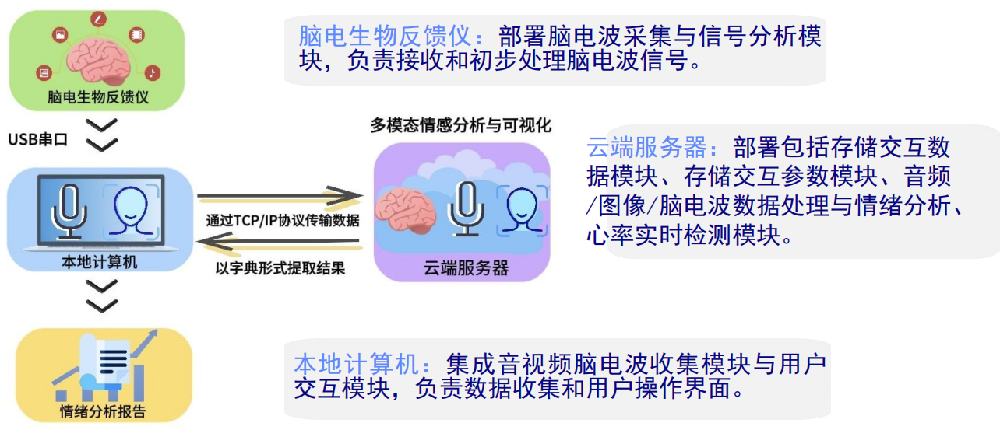
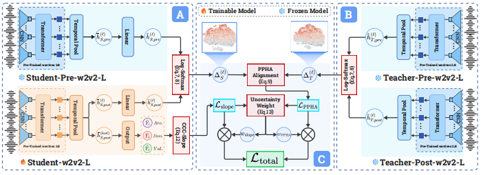
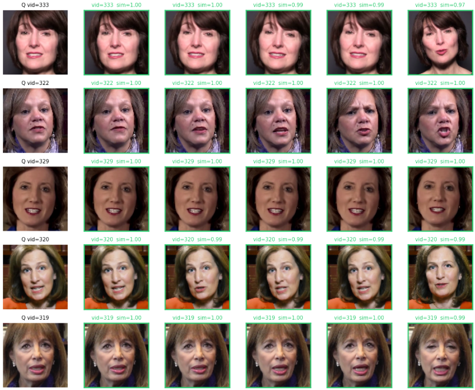

基于个体差异感知的 AI 多模态心理健康检测系统开发
2025.09 – 至今
东北大学 · 指导老师：傅昌锃
PyTorch
ONNX Runtime
EmoNet
wav2vec 2.0
EEG / rPPG
PAD Space
Flask
MongoDB
Qwen API
项目背景： 传统心理健康评估高度依赖 PHQ
抑郁量表、大五人格问卷等主观量表，存在被试配合度低、结果易受主观意愿干扰、难以捕捉细粒度生理状态等局限。本项目以客观生理信号为核心，构建多模态融合的心理健康自动化评测系统，实现从数据采集、特征提取、指标计算到报告生成的全流程闭环。
系统架构： 分为前端采集层、后端处理层与数据持久层三部分。后端基于 Flask Blueprint 构建模块化 RESTful
API，按功能拆分为用户管理、数据采集、分析计算、工具箱等独立蓝图模块，JWT 实现无状态鉴权，MongoDB
负责多模态数据与分析结果的持久化存储。评测流程分为视频观看、自我介绍、阅读任务一、阅读任务二四个阶段，每阶段同步采集视频与 EEG 数据，三路信号异步并行处理与入库。
多模态信号处理： 融合四类生理信号——（1）面部表情 ：EmoNet（Stacked HourGlass 人脸对齐 + 情感识别头）逐秒提取面部
Valence/Arousal；（2）语音情感 ：基于 wav2vec 2.0 的 ONNX 模型逐秒提取语音 PAD 三维情感向量；（3）EEG 脑电 ：接入 NeuroSky
MindWave 采集 δ/θ/α/β/γ 频段功率谱，经滑动窗口归一化后计算注意力、冥想度、警觉度、清醒度等指标；（4）rPPG 脉搏 ：从视频帧 ROI 绿色通道提取光体积描记信号，结合
FFT 频谱分析估算心率、血氧与呼吸频率，并参照中医脉象理论（迟脉、数脉、沉脉、浮脉等）对心率变异性进行分类描述。
指标计算与融合： 所有模态特征统一映射至 PAD 情感空间，计算当前情感坐标与预设情感原型（焦虑、放松、敌意、压力等）之间的欧氏距离，结合跨模态加权融合，输出涵盖三个维度的 20
余项心理健康指标：正面情绪 （自信力、身心平衡率、自我调节能力、能量、活力）、负面情绪 （攻击性、紧张度、表情压力、可疑度）、生理参数 （注意力、放松度、疲劳/焦虑/压力/抑郁指数、幸福感、清醒度等）。结合
PHQ、大五人格、GWB 等标准化量表数据进行补充校验，并基于大五人格模型给出外向性、宜人性、尽责性、神经质、开放性的客观估计。
AI 报告生成： 所有指标计算完成后，以结构化数据为上下文调用 Qwen 大语言模型，生成个性化心理健康分析报告（HTML
格式），包含正面情绪解读、负面情绪解读、生理参数分析与调整建议四个板块，并与历史均值进行横向比较。
个人贡献： 负责系统核心分析模块的设计与开发：从 MongoDB 聚合各阶段面部、语音、EEG、脉搏四类多模态数据；基于 PAD
情感空间实现欧氏距离度量与跨模态加权融合；完成自信力、身心平衡率、焦虑指数、抑郁指数等 20 余项心理健康指标的计算逻辑，并基于大五人格模型推导外向性、宜人性等人格特征；调用 Qwen API
将结构化指标转化为个性化 HTML 分析报告；将全部分析结果持久化写回数据库，完成相关 API 路由的开发与接口测试。

系统架构图
基于知识蒸馏的语音情感识别模型压缩研究
2026.01 – 至今
东北大学 · 指导老师：傅昌锃
Knowledge Distillation
PPHA
wav2vec2-large-robust
MSP-Podcast
IEMOCAP
CCC Loss
Optuna
PyTorch
研究背景： 语音情感识别（SER）旨在从语音信号中预测连续情感维度（Arousal / Valence / Dominance）。以 wav2vec 2.0
为代表的自监督预训练模型在 SER 任务上表现突出，但参数量庞大（wav2vec2-large 达
330M），难以在资源受限场景部署。现有蒸馏方法仅对齐教师微调后的绝对激活值，忽略了微调过程中隐层表示发生的系统性适应偏移——而该偏移本身正是任务相关信息的重要载体。
PPHA 方法： 提出 Pre-Post Hidden
Alignment（PPHA）蒸馏框架，以教师模型从预训练态到微调态的隐层适应偏移作为蒸馏目标，而非微调后的绝对隐层状态。教师与学生各自保留一个冻结的预训练参考检查点，对微调前后的隐层表示分别进行温度缩放
softmax 映射并取对数差分，再以 MSE 对齐两者。所有模型均从同一 wav2vec2-large-robust 预训练检查点出发：教师取前 12 层（165M），学生 L6 取前 6 层（83M），学生
L3 取前 3 层（42M）。参与对齐的教师层 {4, 7, 11, 12} 经 Optuna TPE 100 次试验搜索确定。
辅助技术： （1）斜率正则化 ——CCC 优化易收敛至近常数预测（斜率趋近 0），产生虚假高相关；通过对预测斜率偏离 45° 的角度施加 sin²
惩罚项并以乘法形式附加到 CCC 损失上，有效防止保守预测，对效价（Valence）维度尤为重要。（2）不确定性加权损失（UWL） ——引入可学习 log 方差参数，自动平衡 PPHA 对齐损失与
CCC 损失的比例，无需手动调参。
实验设置： 在 MSP-Podcast v1.10（训练集 63,076 条；Test1 16,903 条与训练集同检索协议；Test2 13,289 条来自完全独立播客）和
IEMOCAP（10,039 条语音，5折留一会话交叉验证）上进行评估，并开展双向跨语料库泛化测试。系统消融 5 种损失组合（P / P+S / P+U / A+S+U / P+S+U）× 3
种学生规模（L3/L6/L12），以 A+S+U（FitNets 式直接对齐）为基线对照。
主要结果： 同容量条件下（L12 学生 vs 教师），学生在 MSP（CCC .487 vs .464）和 IEMOCAP（.632 vs
.606）上均超越教师，证明性能提升源于训练框架本身。L6 保留教师性能的 86–96%，L3 保留 84–93%。PPHA 在 IEMOCAP（.632 vs .612）和 MSP
Test1/Test2（.559/.415 vs .543/.398）上均优于 FitNets 基线，跨语料库迁移方向上亦保持一致优势。
本人贡献： 独立负责 IEMOCAP 数据集实验全流程：数据预处理（音频转换、标签解析、5折划分）、蒸馏训练框架代码实现（含 PPHA 损失、PKL
预计算、梯度累积等工程优化）、消融实验设计与结果分析，以及跨语料库泛化评估。

知识蒸馏框架图
语音情感驱动数字人面部生成系统
2025.03 – 2025.08
东北大学 · 指导老师：傅昌锃
Wav2Lip
ResNet-18
BiLSTM
DistilBERT
Cross-Attention
FiLM
3D PatchGAN
LPIPS
项目背景： Wav2Lip 是目前主流的音频驱动说话人脸生成方案，但其核心局限在于只能驱动嘴唇运动，面部其余区域（表情、眼神、眉毛等）完全静止，生成结果显得机械、缺乏真实感。本项目针对这一局限：在保留音频驱动唇形同步的基础上引入表情生成能力，使数字人面部在说话时能呈现自然的情感变化；随着开发推进，眼部细节（眨眼节律、眼神方向）和眉毛运动对真实感同样关键，因此逐步扩展了对这些区域的专项建模。
架构——上下半脸解耦： 将人脸生成分解为上半脸（眼部/眉毛） 与下半脸（嘴唇） 两条独立分支，分别由不同模态信号驱动，再通过可学习融合掩码合并。主要模块：（1）全脸编码器 ：ResNet-18 backbone + gradient checkpointing 提取参考帧多尺度视觉特征；（2）音频编码器 ：三路并行多尺度 Conv1d + 双向 LSTM 建模逐帧音频；（3）文本情感编码器 ：DistilBERT 提取句子级情感特征驱动表情；（4）下半脸分支 ：以音频为主驱动，带时延偏置的时序交叉注意力对齐音视频，FiLM 条件调制生成唇部动画；（5）上半脸分支 ：融合音频与文本情感特征，预测微表情参数（眨眼概率、挑眉程度、视线方向），关键点热图注意力增强眼部细节；（6）动态融合 ：卷积网络基于 68 点关键点热图预测逐像素软融合权重，平滑合并上下半脸。
训练策略与损失： 分阶段课程学习：冻结上半脸专训唇部 → 冻结下半脸专训眼眉 → 全部解冻整体优化 → 引入对抗训练。判别器：3D 时序 PatchGAN（整体时序一致性）+ 眼部局部 PatchGAN（眼部细节真实感）。损失体系涵盖像素 L1、LPIPS 感知损失、身份一致性、肤色损失、微表情平滑、视线连贯性等，并设计动态权重调度器平衡各分项。
局限与结果： 项目最终未达预期生成质量，受三点制约：（1）算力不足 ——单卡消费级 GPU、批次大小仅为 1，完整训练计划（1000 epoch 含对抗阶段）无法跑完，实际训练至第 124 epoch 终止；（2）数据有限 ——规模小、质量参差，侧脸和遮挡场景下关键点检测噪声大，直接影响两路分支的训练稳定性；（3）复杂度与可训练性的矛盾 ——多子模块设计对数据量和训练充分性要求更高，在当前条件下反而带来训练困难。
收获： 完整走过多模态生成系统从设计到实现的全流程，对音视频对齐、生成模型训练不稳定性、显存优化等问题有了切身认识；对 Wav2Lip 等主流方案的技术边界有了更清晰的判断；认识到资源受限条件下模型设计需在复杂度与可训练性之间做更审慎的权衡。

面部生成系统架构图